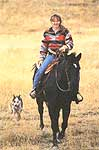
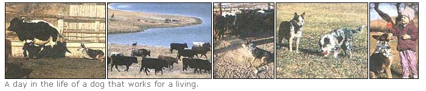
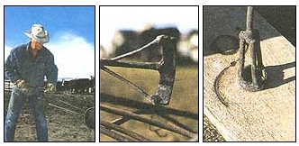

COUNTRY VET
Crossing state lines, health papers, and other travel tips.
Photos William A. Cotton
I bought a horse in Kentucky and I need to haul him home to New Mexico in a few months. I was told I need a vet to issue health papers on him so I can cross state lines. What does this involve? Will I need to get vaccinations? What is the reason for this inspection?
-Paul Matthews
Corona, NM
Health papers for livestock were developed to control the spread of contagious disease as well as to protect the owner/mover from unforeseen health problems during transport. Regulations governing vaccination and testing vary from state to state. Your vet will be able to tell you what is required before entering a specific area.
Your horse should always be current on vaccinations anyway. A four-way tetanus, influenza, and sleeping sickness vaccination should be given annually regardless of transportation status. Other vaccinations depend on age, breeding status, and use of your animal. These would be: streptococcus equi, rhinopneumonitis and Potomac horse fever. Vaccination not only protects your horse when entering a new area, but also other horses that s/he may contact.
A blood test for equine infectious anemia, commonly called the Coggins Test, may also be required when crossing state lines. Your vet must fill out the proper forms, draw blood for serum, submit this to a lab, and get results before your horse can be moved. It pays to start early when considering shipping livestock.
In Western states, your move would require obtaining a brand inspection regardless of whether your horse is branded or not. A brand inspection confirms that the horse in question is being moved legally, and not being stolen. This would be similar to carrying vehicle registration papers in case you're pulled over by the highway patrol. It may also be wise to carry your horse's registration papers and the bill of sale should proof of ownership be necessary.
Certain tests and inspection papers have time constraints as well. You need to be well-prepared for all regulations that your horse may encounter. This can really be frustrating to owners who need a horse shipped yesterday. But believe me, the reasons behind these laws have far-reaching implications.
This summer/fall we had a disease called vesicular stomatitis (v.s.), spread across the Southwestern United States. This disease mainly effected only hoofed creatures causing oral blisters and general malaise. Thankfully this disease wasn't lethal, but it was economically crippling. The beef, dairy and horse industries suffered major setbacks.
Primary means of spread of v.s. were insect vectors and direct contact with infected livestock. The most effective means of controlling the spread of v.s. was through quarantine and health-inspection requirements. Some states, like Kentucky, prohibited movement of horses into the state, period. There were threats that many livestock markets would also shut down in order to halt the epidemic. As you can see, veterinary health inspection is not an idle pursuit. It not only protects your animals and those who move them, but also protects the livestock industry as a whole. The key to a successful move is getting an early start. Contact your vet at least one week prior to shipment. Don't forget to ask about regulations like brand inspection, too. If you can prepare ahead of time, your move should go without a hitch. Good luck, and enjoy your new horse!
We have a few Hereford cattle and we'd like to get a cattle dog. What's the best way for us to decide what kind of dog to get? Are some cattle dogs or sheep dogs easier to train than others? I've heard that Australian Shepherds are temperamental with children. Is this true?
-Evelyn Townsend
Hedrick, IA
Your questions are very valid, and it is good to see someone doing her homework before acquiring any dog. There are many breeds of dogs for working livestock. The three most popular in my area are the Australian shepherd (Aussie), the Australian cattle dog (Heeler), and the Border collie. Any one of these can be used for sheep or cattle if properly trained. Classically, Heelers are used for cattle, Border collies for sheep and Aussies for either cattle or sheep. A good dog starts with basic obedience: sit, stay, come, no etc. Many working dogs are trained to respond to whistle commands or other strange sounds or words that indicate direction, speed, or aggressiveness. The bottom line for having them actually be helpful is obedience. I don't care how much your dog loves to work livestock, if you don't control him, he will only be a disappointment.
I don't think you can label Aussies as temperamental with children. Any of these sensitive working dogs can be temperamental with anyone. On the other hand, any of these breeds can make wonderful family pets, too. A lot depends on their breeding and how they are raised. I personally have a Heeler and an Aussie, as well as a 3-year-old daughter. My Aussie, who is just a pup, is learning manners, but her basic nature is a very happy, friendly sort. You must start with good temperament and keep enforcing the type of behavior you want.
When you think you are ready to commit to owning a working dog, there are many things to consider other than breed. Do I get a puppy or an adult, purebred or cross? Do I train it or have it professionally trained? Sex of the animal has never made a difference to me, but neutering and spaying do. A "fixed" dog will be a lot easier to own (and usually train), due to the fact that you have eliminated one of the dog's strongest instincts-reproduction. I have seen some fabulous "intact" dogs, but I would leave these in the hands of professionals and folks who understand the seriousness of breeding dogs.
Puppies are a joy and a lot of work. You can mold them to your specifications, however. Also, aggression towards people usually shows up early and can be corrected. Adults can be easier to own, but sometimes their past upbringing won't be compatible with what you have in mind. Retraining can be difficult, but it can be accomplished. My Heeler is a reconditioned model. He was horrible when I got him; he seemed to always be looking for trouble. He represents what happens to a lot of working dogs. Working dogs tend to be very intelligent and active. If not given a job, they will often go and find their own work. Many Heelers, Aussies, and Border collies will work children, cats, chickens, etc., by nipping or chasing them. They also tend to be "mouthy" so provide many chew toys; otherwise, they will find couches, chairs or your favorite boots to chew on.
You must be there to discipline their behavior and you must be consistent every time. Never let them work animals at their leisure, only when you are there to direct them. Before any work on live animals is started, they must be unsurpassed in obedience. Working with them daily on just "sit, stay, come" will pay off when it is time to move livestock. Also, when you work with them daily, it gives them something to do rather than thinking up their own activities. If you do not think your dog is learning the way he should, get help from a professional trainer. Dogs are like people. Some learn easily and some need alternative methods to get the ideas across. You can find good and bad students in every breed.
Other breeds that might be of interest to you are: rottweilers, originally bred to work cattle; Great Pyrenees, sheep guardians; or Australian kelpies, very intelligent and hard working. Do not be afraid to shop around. These animals are a commitment, but the right one will be a joy and honor to own.
Last year we thought our cow was having difficulty calving, so we had our vet come out. He lives 30 minutes away and by the time he arrived, our cow had already given birth. Our horse is due this spring. How will we know when the vet should be called? We don't want to seem overprotective, but we don't want to lose a baby or the mother, either. What warning signs should we look for when it comes time for our animals to give birth?
-Sreplien Eckert
La Veta, CO
It always pays off to be well informed and prepared when anticipating parturition (birthing). Dystocia (difficult birthing) can be dealt with systematically in animals and not all species are treated the same.
In cattle dystocias are fairly common. Luckily, a cow or heifer can go for some time without risking the life of the calf or mother. Horses, on the other hand, rarely have dystocias, but when they do, it almost always requires the assistance of a veterinarian. In order to know when a vet should be summoned, we need to understand the different stages of labor.
Stage I, cervical dilation, usually lasts two to six hours in cows and other small ruminants. In horses the time is much less, probably two to three hours from the first signs until the breaking of the amniotic sac. Litter-bearing animals (pigs, etc.) usually have a four- to five-hour Stage 1. Signs associated with this stage are: attempts at seclusion, colic or agitation, and the loss of the cervical plug.
Stage II is the actual delivery of the baby. In cows signs of Stage II labor are abdominal pressing (visible straining), restlessness, and protrusion of fetal membranes from the vulva. Stage II in cows is initiated when fetal parts contact the birth canal and dilated cervix. In most cows, once the amniotic sac is visible, delivery will ensue within two hours. If membranes are visible for longer than two hours without delivery, a vet should be called.
In most instances Stage II is interrupted because the calf is in the wrong position. The most correct position for calves and foals is to have both front hooves coming first with the nose and head closely following. Most cows will strain for two or three minutes then rest two or three minutes. If the resting periods are lengthening (20-30 minutes) without any signs of progress, the cow should be examined.
Common causes for inappropriate Stage II labor are: legs or head not presented correctly, tail coming first, or calves coming upside down. Many heifers have difficulty birthing due to inadequate dilation of the cervix and calves too large for the birth canal. If you feel comfortable repositioning calves and pulling them, remember to limit your efforts to only about 30 minutes. If you can't reposition and extract the calf in this time, a Cesarean section may be in order. Also, when pulling calves, don't apply pressure greater than three strong men. Improper use of "calf jacks" can injure both calf and mother. A calf can survive about eight to 10 hours once Stage II labor has started. Don't waste too much time if you know problems exist. It has been shown that the longer a cow spends in labor, the longer it will take her to normalize and come back in heat after birthing.
The end of Stage I labor in horses is usually noted by the expulsion of two to five gallons of fluid. This event, termed breaking water, is usually followed by a 1015 minute period during which the amniotic sac and foal's feet will become visible through the vulva. If the amnion or feet are not visible after the appearance of chorioallantoic fluid, a vet should be notified. If you need to delay labor while waiting for a vet, you may walk the mare to prevent further foaling. Foals survive one to two hours after Stage II labor starts. Indeed, you must act quickly if you suspect dystocia in the mare.
If feet and amnion appear in the normal time, labor usually progresses normally. A mare will usually lie down for Stage II labor when the foal is delivered. This process takes only 15 minutes in most mares. Any delay could mean a malpositioned foal and veterinary assistance should be summoned at once.
In both cattle and horses, the placenta is usually expelled 15 minutes to an hour following delivery. Retention of membranes beyond six to nine hours would require veterinary care. Examining the rectal and vulva area after delivery is a good idea, too. It may be purple and swollen, but should not show signs of hemorrhage or tearing.
Preparing yourself and your animals for delivery is paramount if you wish to avoid complications. Knowing the exact birth date is helpful, but other signs like increased mammary size, colostrum secretion, and softening of the vulva and muscles around the tail area are good indicators for the impending parturition. You may have to set up a watching schedule one to two weeks prior to the due date, especially if the above signs are evident. One can be fairly lenient in older cows possibly checking every six to eight hours. In heifers, checking every two or three hours may be necessary when nearing the due date. Some horse owners prefer to sleep in the barn with their mares, especially if the mares are "waxing"- secreting colostrum. Of course, even the best foal watchers sometimes miss the great event. Most animals will deliver early in the morning, say two or three o'clock. I have gone in for a cup of coffee only to come back and find a healthy foal on the ground. Just remember that you have more time with cattle dystocias than with horses; however, cattle tend to have more dystocias than horses, statistically. If you are observant and well informed, you should be able to tell when an animal is in trouble or when things are progressing normally. Good luck with your babies, you are on the right track.
Is branding with hot irons a cruel practice? Are there alternatives to branding irons that work? I've heard about freeze brands, but I also heard they don't last.
-Ruth Burwell
Healy, KS
Branding with hot irons is an issue that has recently come to light with the surge of animal rights awareness in this country. In my opinion, it is not cruel if done correctly and judiciously. To appreciate why we brand livestock today, one must look at the roots of this practice. A brand is like the title to your car. A brand registered in your name decrees that all cattle and horses wearing this brand belong to you. If you sell this animal to someone, they must get a brand inspection, which is similar to a transfer of title. In areas where cattle are on open range, brands help distinguish between different owners. In a grazing association, several different ranches may run their cattle together. At gathering time, a permanent symbol on the cattle allows for quick identification of the animals in a legal manner. In this area of the country (that is, Colorado and other western states), you may not sell-or even transport-livestock without a brand inspection. This deters theft and illegal movement of cattle.
Now, why must hot irons be used instead of other methods? First, the labeling of cattle must be permanent. Therefore ear tags, hair colorants, etc., would not work because they can be altered too easily. Second, the symbol must be easily visible. Microchips and tattoos are great ideas, but impractical from an economic as well as a labor standpoint. Most cattle are not handled as easily as horses or dogs. Imagine scanning 5,000 head of wild cattle at a sale yard in an eight hour day; a brand can be identified at a glance and at a distance.
Freeze branding is easily read but does tend to fade with time. The problem here is the practicality of applying the brand. Many operations brand cattle out on the range. Sometimes access to rangeland may prohibit hauling liquid nitrogen needed for freeze branding. Also, liquid nitrogen may not be readily available in some parts of the country, but fire is. Another problem with freeze brands is the cattle must be dark haired in order for the brand to show. Freezing doesn't destroy the hair follicle, just the pigment production. You would not be able to see a freeze brand on Charlais or other light-haired cattle. Furthermore, if you wanted to destroy the hair follicle so a dark symbol appeared, you would have to freeze the skin for a greater length of time. This in itself is stressful and painful to the cattle. Freeze branding is also not recognized as a legal mark in some states.
Branding with hot irons evolved from convenience and practicality. We brand our new calves each spring. While it is true that the calves bawl momentarily when a hot iron is applied, they do not seem to be in pain once turned loose. Remember, cattle hide is several millimeters thick compared with our skin. Also, the number of nerve-endings is far fewer per square centimeter than in most other animals. A correctly applied brand leaves a smooth, hairless scar. If the iron is applied too cold or too quickly, blisters form. Blisters can form open wounds leading to avenues for infection and discomfort. If they arise, the hot iron should be superimposed and reapplied to the area. Actually, once the initial brand is laid second applications do not seem to cause discomfort. A correctly applied brand really is no more painful than a vaccination or an ear tag.
Branding is really only necessary for those who run large herds of cattle, where the possibility of theft or mixing with other herds exists. In fact, brand inspection laws are really only enforced in a few western states. In those states even cattle not branded may receive a brand inspection to be sold or transported. The decision to brand or not to brand is in the hands of the owner. If you only have a few head of cattle, it may be unnecessary-as well as impractical-to brand. For those who have many animals or those who graze them with others, hot-iron branding is still the most practical and legal means of marking cattle.
|
 Branding evolved from both convenience and practicality. A brand is often no more painful than an ear tag. |
 |
 |